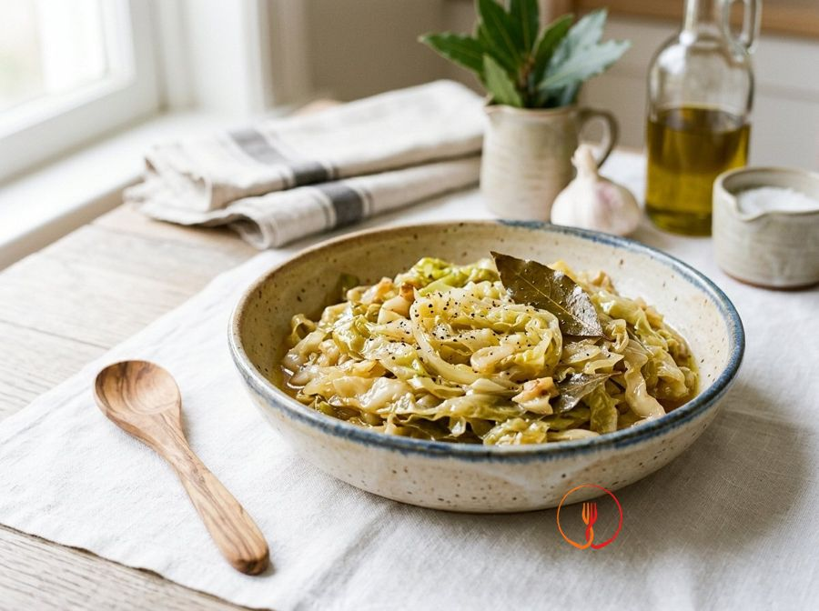

Verza Stufata con Aglio e Alloro
La verza è uno degli ortaggi più economici dell'inverno e, se stufata lentamente, perde la sua nota amara diventando dolcissima. L'alloro conferisce un profumo antico e confortante.
Un contorno classico della tradizione contadina, perfetto per accompagnare secondi piatti rustici durante i mesi invernali. La verza stufata offre una consistenza morbida e un sapore deciso, esaltato dalla nota aromatica dell'alloro e dalla punta acida dell'aceto.
Ingredienti
- Verza800 g
- Aglio2 spicchi
- Alloro secco2 foglie
- Olio extravergine di oliva20 ml
- Aceto di vino rosso15 ml
Allergeni
Nessuno dei 14 allergeni principali tra gli ingredienti.
Procedimento
- Inizia la preparazione mondando gli 800 g di verza: elimina le foglie esterne più coriacee e scure, tagliala a metà e rimuovi con un coltello il torsolo centrale più duro. Appoggia le metà sul tagliere e riducile a striscioline sottili di circa 5-8 millimetri, cercando di mantenere uno spessore uniforme per garantire una cottura omogenea. Dovrai ottenere un volume abbondante di verza sminuzzata, pronta per il lavaggio. Il mio consiglio: non scartare troppo cuore, ma affettalo molto finemente perché è ricco di sapore e nutrienti.
- Lava accuratamente la verza affettata in una ciotola capiente piena d'acqua fredda, muovendola con le mani per eliminare eventuali residui di terra. Scola l'ortaggio utilizzando uno scolapasta, ma non asciugarlo eccessivamente; l'acqua rimasta tra le pieghe delle foglie sarà fondamentale per creare il vapore necessario alla stufatura iniziale. Lasciala riposare solo un minuto nello scolapasta prima di procedere. Il risultato deve essere una verza pulita, vivida e leggermente bagnata. Il mio consiglio: usa acqua molto fredda per mantenere la struttura delle fibre croccante prima della cottura.
- Prendi una casseruola capiente dal fondo spesso, versa i 20 ml di olio extravergine di oliva e aggiungi i 2 spicchi d'aglio precedentemente schiacciati (ma lasciati interi) e le 2 foglie di alloro secco. Scalda a fiamma media per circa 2 minuti, inclinando leggermente la pentola per far sì che l'aglio e l'alloro siano immersi nell'olio e rilascino i loro oli essenziali. Quando l'aglio risulterà leggermente dorato e sentirai il profumo aromatico dell'alloro, la base sarà pronta. Il mio consiglio: schiaccia l'aglio con il piatto della lama del coltello per rompere le fibre e liberare l'allicina senza bruciarlo.
- Inizia ad aggiungere la verza nella pentola un po' alla volta, utilizzando una pinza da cucina o un cucchiaio di legno per girarla immediatamente e incorporarla al condimento. Poiché il volume iniziale è notevole, attendi che la prima manciata appassisca leggermente prima di aggiungere la successiva, mantenendo una fiamma media. Questo processo richiede circa 5-7 minuti affinché tutto l'ortaggio entri comodamente nel tegame. Noterai che la verza inizierà a ridursi drasticamente di volume e a diventare lucida grazie all'olio. Il mio consiglio: non avere fretta in questa fase, perché un inserimento graduale garantisce che ogni strisciolina sia ben condita.
- Regola di sale e pepe nero appena macinato, quindi versa i 15 ml di aceto di vino rosso direttamente sulla verza calda. Alza leggermente la fiamma per 30 secondi per permettere alla parte alcolica e pungente dell'aceto di evaporare, lasciando solo la nota acida che bilancerà la dolcezza naturale della verza. Mescola con cura per distribuire i sapori in modo uniforme su tutto il composto. Il profumo cambierà, diventando meno pungente e più rotondo. Il mio consiglio: l'aceto aiuta anche a mantenere un colore più vivo e a rendere le fibre della verza più digeribili.
- Abbassa la fiamma al minimo, copri la pentola con un coperchio che chiuda bene e lascia stufare lentamente per circa 25 minuti. In questa fase la verza cuocerà nel proprio vapore e nei liquidi di vegetazione che rilascerà gradualmente grazie all'azione del sale. Mescola ogni 10 minuti circa per assicurarti che nulla si attacchi al fondo, mantenendo il calore costante e dolce. La verza inizierà a passare dal verde brillante a un tono più scuro e caldo. Il mio consiglio: usa un coperchio di vetro se possibile, così potrai monitorare l'umidità interna senza disperdere il calore.
- Controlla la consistenza e l'umidità della preparazione verso i due terzi del tempo di cottura: se noti che il fondo della pentola è troppo asciutto, aggiungi un paio di cucchiai d'acqua calda. La verza deve restare umida e succosa, non deve assolutamente friggere o rosolare troppo, poiché il sapore diventerebbe amaro. Continua la cottura finché la verza non risulterà estremamente tenera sotto i rebbi della forchetta. Il risultato ottimale è una consistenza fondente ma non sfatta. Il mio consiglio: non aggiungere acqua fredda per non bloccare la cottura delle fibre.
- A fine cottura, rimuovi gli spicchi d'aglio e le foglie di alloro per evitare che qualcuno li mangi accidentalmente. Assaggia un pezzetto di verza per verificare se serva un ulteriore pizzico di sale e lascia riposare il contorno a fuoco spento per 2 minuti prima di servire. La verza dovrà presentarsi di un bel colore verde oliva scuro, lucida e intensamente profumata. Disponila in un piatto da portata ben caldo come accompagnamento ideale per legumi o carni saporite. Il mio consiglio: se la prepari con qualche ora di anticipo e la riscaldi leggermente, i sapori saranno ancora più armonizzati e profondi.
Consigli
- Tagliate la verza a strisce sottili e regolari per garantire una cottura uniforme e una consistenza fondente.
- Utilizzate una casseruola dal fondo spesso per distribuire il calore in modo omogeneo senza bruciare le foglie.
- Lasciate riposare la verza per qualche minuto a fuoco spento prima di servirla per permettere ai sapori di amalgamarsi.
Varianti
- Potete sostituire l'aceto di vino rosso con dell'aceto di mele per ottenere un gusto più delicato e fruttato.
- Aggiungete una manciata di bacche di ginepro durante la stufatura per donare al piatto un profumo di bosco più intenso.
Valori nutrizionali (stima)
| Per porzione (135 g) | Per 100 g | |
|---|---|---|
| Energia | 393 kJ / 94 kcal | 291 kJ / 70 kcal |
| Proteine | 2.8 g | 2.1 g |
| Carboidrati | 9.2 g | 6.8 g |
| di cui zuccheri | 5.4 g | 4.0 g |
| Grassi | 4.6 g | 3.4 g |
| di cui saturi | 0.7 g | 0.5 g |
| Fibre | 6.2 g | 4.6 g |
| Sale | 0.45 g | 0.3 g |
Valori stimati con l'AI su dati medi CREA / USDA: sono indicativi e non sostituiscono il parere di un medico o di un nutrizionista.
Apri la ricetta nell'app per la lista della spesa, le schede ingredienti e i negozi vicini.